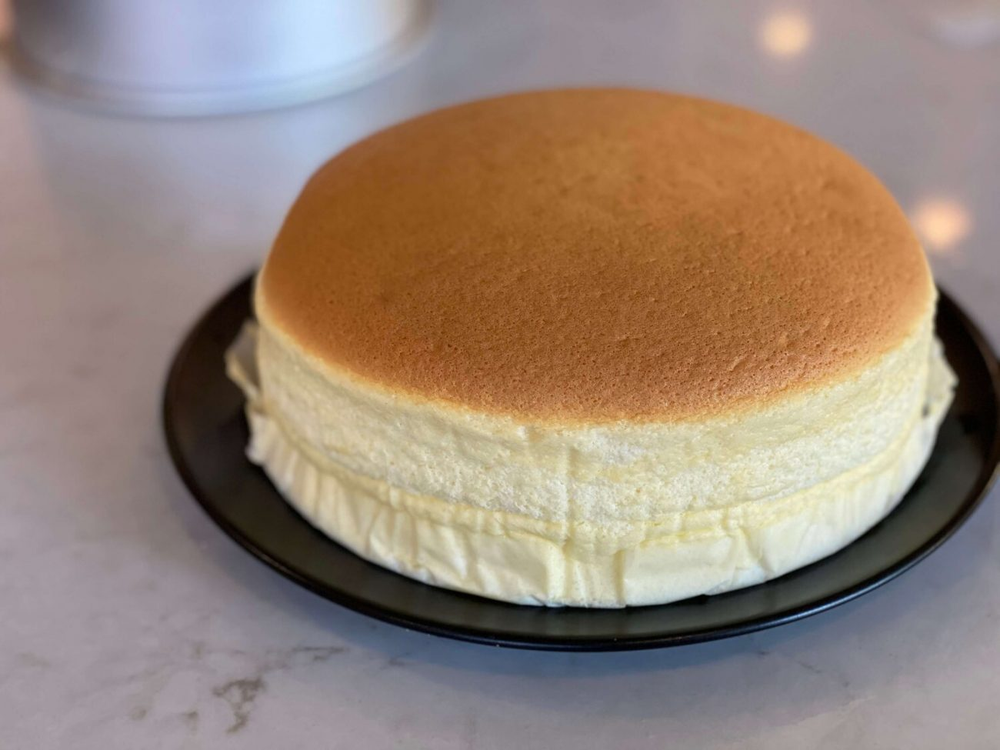

Odin Kitchen | Japanese Cheesecake

Description
Japanese cheesecake is a variety of cheesecake that is usually lighter in
texture and less sweet than North American style cheesecakes. It has a
characteristically wobbly, airy texture similar to a soufflé when fresh
out of the oven and a chiffon cake like texture when chilled.
Ingredients
- 7 tablespoons butter
- 4 oz cream cheese (100 g)
- ½ cup milk (130 mL)
- 8 eggs, yolk
- ¼ cup flour (60 g)
- ¼ cup cornstarch (60 g)
- 13 large egg whites
- ⅔ cup granulated sugar (130 g)
- hot water, for baking
- powdered sugar, for serving
- 1 pt Strawberries (340 g), for serving
Steps
- Preheat the oven to 320°F (160°C).
-
In a small pot over medium heat, whisk together the butter, cream
cheese, and milk until melted and smooth. Remove from the heat and let
cool.
-
In a large bowl, whisk the egg yolks until smooth, then slowly drizzle
in the cream cheese mixture, stirring until evenly combined.
-
Sift in the flour and the cornstarch, whisking to make sure there are no
lumps.
-
In another large bowl, beat the egg whites with a hand mixer until soft
peaks form. Gradually add the sugar while continuing to beat until stiff
peaks form.
-
Fold about ¼ of the egg whites and into the yolk mixture, then repeat
with the remaining egg whites until the batter is evenly combined.
-
Grease the bottom of a 9 x 3-inch (23 x 7.5 cm) round cake pan, then
line the bottom and sides with parchment paper. If using a springform
pan, make sure to wrap the bottom and sides completely in foil twice to
prevent any leakage.
-
Pour the batter into the pan and shake to release any large air bubbles.
-
Place the pan into a larger baking dish lined with 2 paper towels at the
bottom. The paper towels ensure that the heat is distributed evenly
along the bottom of the pan. Fill the larger pan about 1-inch (2-cm)
high with hot water.
-
Bake for 25 minutes, then reduce the heat to 285°F (140°C), and bake for
another 55 minutes, until the cake has risen to almost double its
original height.
-
Remove from oven, and carefully invert the cake onto your dominant hand
and peel off the paper. Be extremely careful, the cake will be hot. You
can also invert the cake onto a plate, but this will cause the cake to
deflate more.
-
Dust the top of the cake with powdered sugar, then slice and serve with
strawberries while still warm!